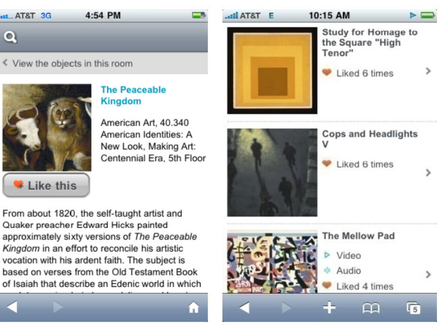
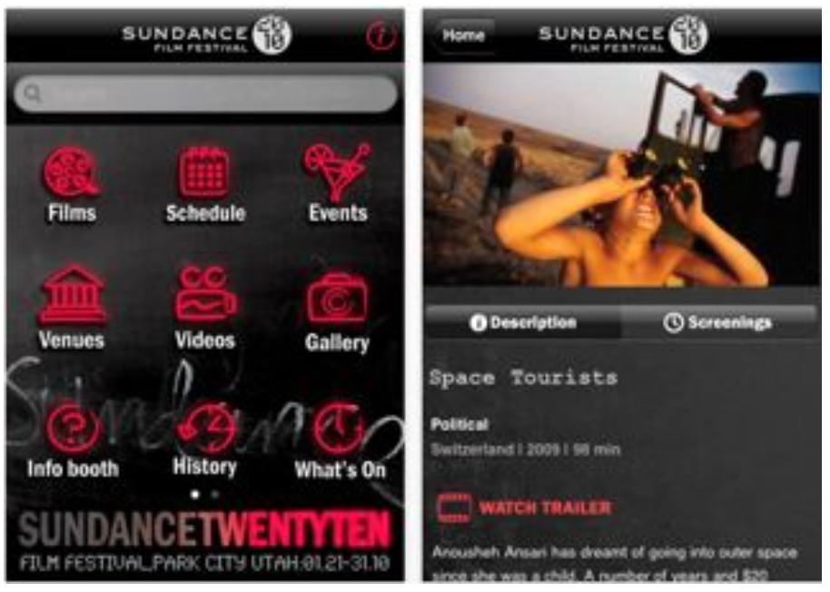

Chicago Gangland Tour
Ever wanted to walk in the footsteps of famous gangster Al Capone? That’s exactly what the Chicago Gangland Tour app helps you do, integrated with google maps to give users a handheld guide for a historical walkthrough of Chicago’s mafia history. This app provides info on all the different sites historical relevance and invites users to add their own comments. My favorite aspect of the app is the drop-down menu where results can be sorted by subjects like murders, shootouts, and gangster hideouts.At The Booth
At The Booth is a full-service app for attendees of Broadway and Off-Broadway shows in New York City. The main page updates with every launch of the app and includes the latest shows and theater locations. For each show the app provides info on the showtimes, ticket prices, discounts, synopses, links to reviews and videos, and nearby restaurants. Listings will appear with a pink undertone to let users know if there are long lines at the theater. The only real complaint I have about the app is that the listings are only viewable in list form, whereas a map option would really assist in seeing all that is available in the immediate area.Brooklyn Museum Mobile
Another great app for a large museum, Brooklyn Museum Mobile has less of a focus on navigation and more on community and interaction. The app brings in aspects from social media by inviting users to add descriptive tags and/or “like” artworks from the collection. This acts as a recommendation system for other visitors and encourages a more participatory experience. The aspect I like about Brooklyn Museum’s offering is that the app runs off of a mobile website, meaning that it is not device exclusive and anyone with a web-enabled device can join in the fun. The Sundance Festival 2010
The Sundance Festival app acts as an online brochure for the annual film festival. In addition to offering videos and reviews on films being shown, the app gives festival attendees real-time updates as to what is happening with the film fest’s various events and screenings. The one feature that this app lacks is a way to create custom schedules of screening times and events. This would be invaluable at a festival where multiple things are being offered at once and making the most of the your time requires a lot of planning. 